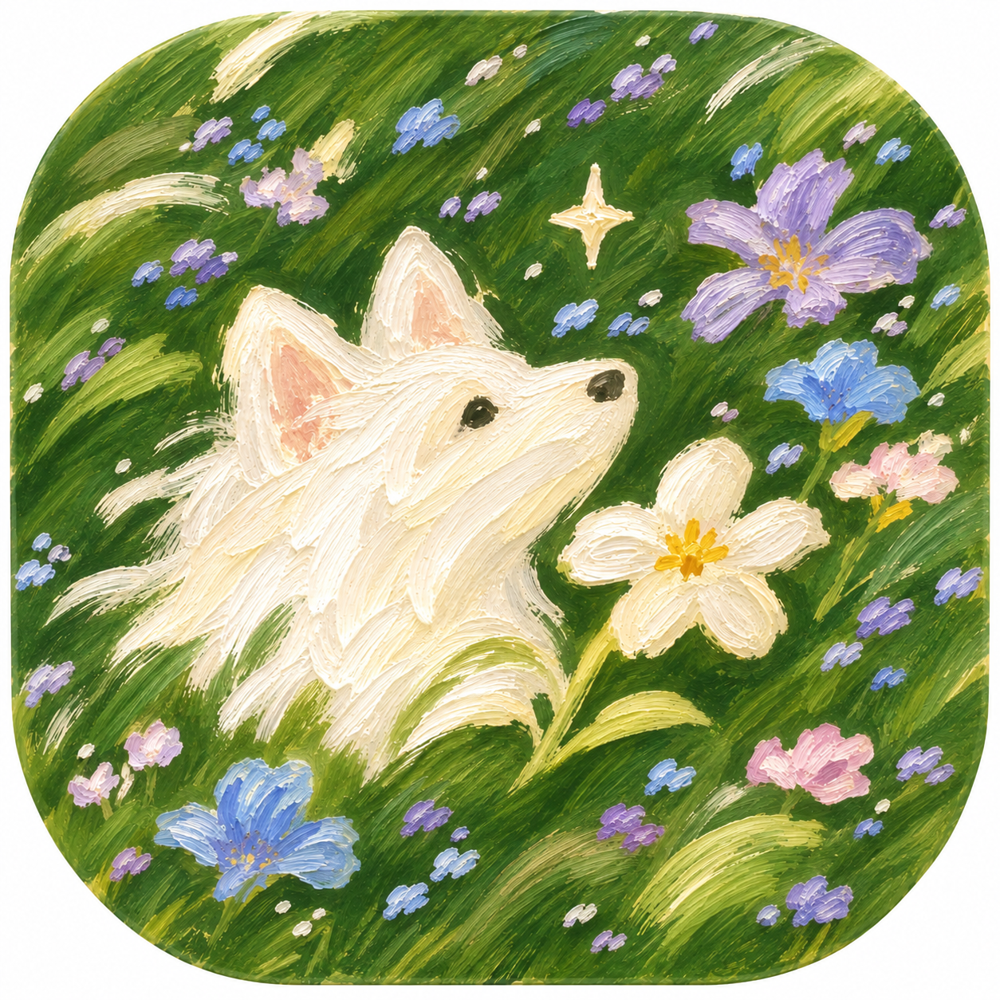

犬花 Icon 隔離測試
這是公開的圖示入口測試頁，不連接犬花正式訂單或管理工具。
開啟隔離 Apps Script 測試頁 請先用 Safari「加入主畫面」，確認圖示，再從新圖示開啟本頁並點選上方按鈕。隔離 Apps Script 僅授權原帳號存取。
這是公開的圖示入口測試頁，不連接犬花正式訂單或管理工具。
開啟隔離 Apps Script 測試頁 請先用 Safari「加入主畫面」，確認圖示，再從新圖示開啟本頁並點選上方按鈕。隔離 Apps Script 僅授權原帳號存取。